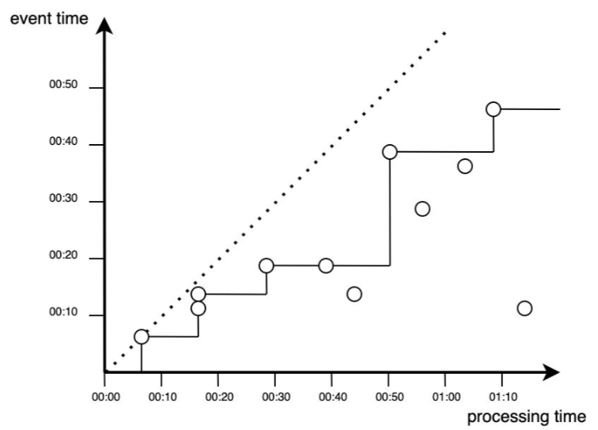

Analiza strumieni danych
Batch vs Stream Processing
Oczekiwania vs Rzeczywistość

Kiedy podjąć decyzję biznesową ?

Rodzaj danych
- Batch = Duże, historyczne zbiory
- Stream = Strumień danych, on line, przesyłane w trybie ciągłym
Czas uruchomienia przetwarzania
- Batch = minuty, godziny, dni (patrz Hurtownie danych)
- Stream = Real-time/near-real-time
Ponowne przetwarzanie
- Batch = możliwe i stosowane bardzo czesto
- Stream = ,,niemożliwe’’

ETL
Extract, Transform, Load is a basic pattern for data processing, commonly known in data warehousing. It’s all about extracting data from a source, transforming the data (business rules) and at the end writing/loading everything to a target (Hadoop, Relational Database, Data Warehouse etc.)
Big Data
Systemy Big data mogą być częścią (źródłem) dla hurtowni danych (np. Data Lake, Enterprise Data Hub)
Ale Hurtownie danych nie są systemami Big Data!
- Hurtownie danych
- przetrzymywanie danych wysoko strukturyzowanych
- skupione na analizach i procesie raportowania
- 100% accuracy
- Big Data
- dane o dowolnej strukturze
- służy do różnorodnych celów opartych na danych (analityka, data science …)
- poniżej 100% accuracy

Hadoop Map-Reduce
Gdy mówimy o skali (nie o języku Scala), najczęściej przychodzi nam na myśl przeglądarka Google. Przeszukuje ona ogromne zbiory danychz dużą prędkością. Sama nazwa Goolge wskasuje na skalę (colowo przyjęto błędną nazwę w zapisie googol co oznacza 1 i 100 zer).
Sprawdź czy do końca zajęć uda Ci się zapisać liczbę googol na kartce.
Powinno być dla Ciebie jasne, że żadne tradycyjne systemy, np relacyjne systemy baz danych, ani programowanie imperatywne nie są w stanie obłużyć przeszukiwania takiej ilości danych. Problemy te doprowadziły do budowy rozproszonych systemów plików Google File System, MapReduce (paradygmat programowania równoległego), czy Bigtable (skalowalna pamięć masowa ustrukturyzowanych danych znajdujących się na GFS).

Znajdź prosty algorytm map reduce w dowolnym języku programowania i uruchom go.

Jak poprawić ?
APACHE SPARK


Strumienie danych
Strumieniowanie możesz kojarzyć z serwisów przesyłających video w trybie online. Gdy oglądasz swój ulubiony serial (tak jak teraz na zajęciach) serwis odpowiadający za strumieniowanie w nieprzerwany sposób przesyła do ciebie kolejne “porcje” video. Identycznie koncepcja ta realizowana jest w przypadku danych strumieniowych. Format przesyłanych porcji nie musi być plikiem video, wszystko zależy od celu realizowanego biznesowo. Np. ciągły pomiar z różnego rodzaju czujników w farbykach, elektrowniach itp. Warto odnotować, że masz do czynienia z ciągłym strumieniem danych, które przetwarzać musisz w czasie rzeczywistym. Nie możesz czekać do zatrzymania linii produkcyjnych w celu wykonania analizy, wszystkie pojawiające się problemy chcesz rejestrować natychmiast i jak najszybciej na nie reagować.
Analiza strumieni danych to ciągłe przetwarzanie i analiza dużych zbiorów danych w ruchu.
Porównuj to do wsakazanych powyżej elementów Big Data. Przetwarzanie Batchowe jest przeciwieństwem do przetwarzania strumieniowego. Najpierw zbierasz duże ilości danych a potem realizujesz analizy. Możesz oczywiście zawsze pobrać video w całości zanim je obejrzysz, ale czy miałoby to sens? Istnieją przypadki gdy takie podejście nie stanowi problemu, ale już tu widzisz, że przetwarzanie strumieniowe może przynieść dla biznesu dodatkowe wartości dodane, których trudno oczekiwać przy wsadowym przetwarzaniu.
Analiza danych w czasie rzeczywistym a przetwarzanie strumienia zdarzeń
Łatwo jest połączyć analizę w czasie rzeczywistym i analizę strumieniową (lub przetwarzanie strumienia zdarzeń). Ale chociaż technologie analizy strumieniowej mogą umożliwiać analizę w czasie rzeczywistym, to nie to samo!
Analiza strumieniowa polega na przetwarzaniu danych w ruchu. Analityka w czasie rzeczywistym to dowolna metoda przetwarzania danych, która skutkuje okresem opóźnienia określanym jako „w czasie rzeczywistym”.
Zazwyczaj systemy analizy czasu rzeczywistego są definiowane jako twarde i miękkie systemy czasu rzeczywistego. Niedotrzymanie terminu w twardych systemach czasu rzeczywistego, takich jak samolot, jest katastrofalne, a w miękkich systemach czasu rzeczywistego, takich jak stacja pogodowa, niedotrzymanie terminów może prowadzić do bezużytecznych danych.
Ponadto, podczas gdy analiza strumieniowa implikuje istnienie architektury strumieniowej, analiza w czasie rzeczywistym nie implikuje żadnej konkretnej architektury.
Wszystko, co implikuje analityka w czasie rzeczywistym, polega na tym, że tworzenie i przetwarzanie danych odbywa się w dowolnym czasie, który firma definiuje jako „w czasie rzeczywistym”.
Źródła danych przesyłanych strumieniowo obejmują:
- czujniki sprzętu,
- strumienie kliknięć,
- śledzenie lokalizacji
- interackcja z użytkownikiem: co robią użytkownicy Twojej witryny?
- kanały mediów społecznościowych,
- notowania giełdowe,
- aktywność w aplikacjach
- inne.
Firmy wykorzystują analitykę strumieniową do odkrywania i interpretowania wzorców, tworzenia wizualizacji, przekazywania spostrzeżeń i alertów oraz uruchamiania procesów w czasie rzeczywistym lub zbliżonym do rzeczywistego.
Uzasadnienie biznesowe
Analityka służy do znajdowania znaczących wzorców w danych i odkrywania nowej wiedzy. Dotyczy to zarówno transmisji strumieniowych, jak i tradycyjnych analiz.
Ale w dzisiejszym świecie natura „znajdowania sensownych wzorców w danych” uległa zmianie, ponieważ zmienił się charakter danych. Szybkość, objętość i rodzaje danych eksplodowały.
Twitter produkuje ponad 500 milionów tweetów dziennie. IDC przewiduje, że do 2025 roku urządzenia Internetu rzeczy (IoT) będą w stanie wygenerować 79,4 zettabajtów (ZB) danych. I te trendy nie wykazują oznak spowolnienia.
Biorąc pod uwagę nowy charakter danych, główną zaletą analizy strumieniowej jest to, że pomaga ona firmom znajdować znaczące wzorce w danych i odkrywać nową wiedzę ,,w czasie rzeczywistym” lub zbliżonym do rzeczywistego.
- który pojazd firmowej floty ma prawie pusty bak i gdzie wysłać prowadzącego pojazd do tankowania.
- Który pojazd floty zużywa najwięcej paliwa i dlaczego?
- Które urządzenia w zakładzie czy fabryce mogą ulec awarii w ciągu najbliższych dni?
- Jakie części zamienne trzeba będzie wymienić i w których maszynach w najbliższym czasie ?
- Ilu klientów aktualnie robi zakupy w sklepie i czy można im coś zaproponować ?
- Czy klient dzwoni w celu zerwania umowy ?
- i wiele wiele innych.
Przykładowe biznesowe zastosowania
Dane z sensorów IoT i detekcja anomalii
Stock Trading (problemy regresyjne) - czas reagowania na zmiany i czas zakupy i sprzedaży akcji.
Clickstream for websites (problem klasyfikacji) - śledzenie i analiza gości na stronie serwisu internetowego - personalizacja strony i treści.
Definicje
Zapoznaj się z tematem danych strumieniowych
Definicja 1 - Zdarzenie czyli wszystko co możemy zaobserwować w pewnej chwili czasu. Generowane są jako bezpośredni skutek działania.
Definicja 2 - W przypadku danych zdarzenie rozumiemy jako niezmienialny rekord w strumieniu danych zakodowany jako JSON, XML, CSV lub binarnie.
Definicja 3 - Ciągły strumień zdarzeń to nieskończony zbiór pojedynczych zdarzeń uporządkowanych w czasie np. logi z urządzenia.
Definicja 4 - Strumień danych to dane tworzone przyrostowo w czasie, generowane ze statycznych danych (baza danych, czytanie lini z pliku) bądź w sposób dynamiczny (logi, sensory, funkcje).
Przedsiębiorstwo to organizacja, która generuje i odpowiada na ciągły strumień zdarzeń.
Analityka strumieniowa (ang. stream analytics) nazywana jest również przetwarzaniem strumieniowym zdarzeń (ang. event stream processing) - przetwarzanie dużej ilości danych już na etapie ich generowania.
Niezależnie od zastosowanej technologi wszystkie dane powstają jako ciągły strumień zdarzeń (działania użytkowników na stronie www, logi systemowe, pomiary z sensorów).
Czas w analizie danych w czasie rzeczywistym
W przypadku przetwarzania wsadowego przetwarzamy dane historyczne i czas uruchomienia procesu przetwarzania nie ma nic wspólnego z czasem występowania analizowanych zdarzeń.
Dla danych strumieniowych mamy dwie koncepcje czasu:
- czas zdarzenia (
event time) - czas w którym zdarzenie się wydarzyło. - czas przetwarzania (
processing time) - czas w którym system przetwarza zdarzenie.
W przypadku idealnej sytuacji:

W rzeczywistości przetwarzanie danych zawsze odbywa się z pewnym opóźnieniem, co reprezentowane jest przez punkty pojawiające się poniżej funkcji dla sytuacji idealnej (poniżej diagonalnej).

W aplikacjach przetwarzania strumieniowego istotne okazują się różnice miedzy czasem powstania zdarzenia i jego procesowania. Do najczęstszych przyczyn opóźnienia wyszczególnia się przesyłanie danych przez sieć czy brak komunikacji między urządzeniem a siecią. Prostym przykładem jest tu przejazd samochodem przez tunel i śledzenie położenia przez aplikację GPS.
Możesz oczywiście zliczać ilość takich pominiętych zdarzeń i uruchomić alarm w sytuacji gdy takich odrzutów będzie za dużo. Drugim (chyba częściej) wykorzystywanym sposobem jest zastosowanie korekty z wykorzystaniem tzw. watermarkingu.
Proces przetwarzania zdarzeń w czasie rzeczywistym można przedstawić w postaci funkcji schodkowej, reprezentowanej na rysunku:

Jak można zauważyć nie wszystkie zdarzenia wnoszą wkład do analizy i przetwarzania. Realizację procesu przetwarzania wraz z uwzględnieniem dodatkowego czasu na pojawienie się zdarzeń (watermark) można przedstawić jako proces obejmujący wszystkie zdarzenia powyżej przerywanej linii. Dodatkowy czas pozwolił na przetworzenie dodatkowych zdarzeń, natomiast nadal mogą zdarzyć się punkty, które nie będą brane pod uwagę.

Przedstawione na wykresach sytuacje jawnie wskazują dlaczego pojęcie czasu jest istotnym czynnikiem i wymaga ścisłego określenia już na poziomie definiowania potrzeb biznesowych. Przypisywanie znaczników czasu do danych (zdarzeń) to trudne zadanie.
okna czasowe
Okno rozłączne (ang. tumbling window) czyli okno o stałej długości. Jego cechą charakterystyczną jest to, iż każde zdarzenie należy tylko do jednego okna.

Okno przesuwne (ang. sliding window) obejmuje wszystkie zdarzenia następujące w określonej długości między sobą.

Okno skokowe (ang. hopping window) tak jak okno rozłączne ma stałą długość, ale pozwala się w nim na zachodzenie jednych okien na inne. Stosowane zazwyczaj do wygładzenia danych.

Aplikacje dla strumieniowania danych
Aplikacja przetwarzająca strumień zdarzeń powinna umożliwiać przetworzenie i zapisanie zdarzenia oraz dostęp (w tym samym czasie) do innych danych tak by móc dane zdarzenie przetworzyć (wykonać na nim dowolne przeliczenie) i zapisać jako stan lokalny. Stan ten może być zapisywany w wielu miejscach np. zmienne w programie, pliki lokalne, wew i zew bazy danych. Jedną z najbardziej znanych aplikacji tego typu jest Apache Kafka, którą można łączyć np. z Apache Spark bądź Apache Flink.
Porównanie z aplikacją w trybie batch
Wiedza:
- Zna możliwości i obszary zastosowania procesowania danych w czasie rzeczywistym
- Rozumie potrzeby biznesowe podejmowania decyzji w bardzo krótkim czasie
Umiejętności:
- Rozumie ograniczenia wynikające z czasu przetwarzania przez urządzenia oraz systemy informatyczne
Kompetencje:
- Utrwala umiejętność samodzielnego uzupełniania wiedzy teoretycznej jak i praktycznej w zakresie programowania, modelowania, nowych technologii informatycznych z wykorzystaniem analizy w czasie rzeczywistym.
- Formułuje problem analityczny wraz z jego informatycznym rozwiązaniem